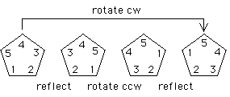

| 3. Here is an example using a pentagonal template. |
| Refelct across a vertical line, rotate |
|  |
| The hexagonal template example is similar. |
From bab = a-1 we see (ab)2 = (ab)(ab) = a(bab) = a(a-1) = 1.
Return to Symmetries of Regular Polygons Exercises.